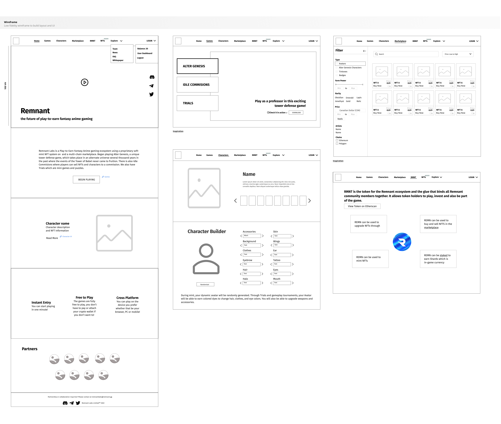

Remnant Labs is a fantasy anime universe featuring multiple interoperable titles. Users can embark on an epic adventure in the tower defense game, Alter Genesis, while taking part in monthly mini-game tournaments.
As the lead front end developer on the project, I oversaw the complete overhaul of the company's website, utilizing my proficiency in Figma to develop user flows, wireframes, and interactive mock-ups. The end result was a visually striking, modern design.
Research
I began the project by conducting extensive research on the fantasy anime game genre, identifying our target audience and analyzing competitors to inform the creation of a unique brand voice. Working closely with my team, we established a tone that would effectively appeal to our target audience and set our game apart in the market.
- Brand Voice: Our game features graphics heavily influenced by Japanese anime, with a whimsical tone and a bright, adventurous atmosphere.
- Target Audience: The game is targeted to casual and strategy players. The demographic is teens and young adults in North America, Japan, China and Korea.
- Tone: Casual ‘role-playing tone’ on website and game text. Tone is used whenever we (the devs, GMs) communicate with the playerbase such as through messages in the mailbox.
In the next steps, I established the typography and created the color palette.
Prototyping
In order to achieve a seamless and intuitive user experience for our project, I developed low-fidelity wireframes as a starting point for our design process. By working with basic shapes and layouts, I was able to quickly test and iterate on different design concepts, gathering feedback from our team and stakeholders. Through this iterative process, I was able to make informed decisions on the final design, ensuring that the website was intuitive and enjoyable for players to use.
Homepage
I designed an organized and transparent navigation system as a road map for easy access to various pages and information on the site. This improved the user experience and distinguished the brand. I also applied Hicks Law by minimizing the number of options in the navigation for efficient decision-making.I also added a trailer video on the homepage, which served as a powerful tool to showcase the game's graphics and overall concept. This feature not only enhanced user engagement but also greatly increased the game's visibility and popularity among our target audience, making it a crucial aspect of the website's design
To further encourage user engagement, I incorporated a prominent call-to-action button in addition to a clear brand description, encouraging users to interact with the product.Games Page
Implementation
Character Card Components
As character cards are crucial to the game, I proposed three different versions to display the avatars with their descriptions, each offering a unique and interactive experience.
Results
Through the redesign, we achieved an increase in user engagement and conversion rates. The improvements to the navigation, addition of the games page and alignment of the website's visual elements with the game's assets, created a cohesive and immersive experience. We received positive feedback from viewers who saw the high-fidelity prototypes.
Before

After